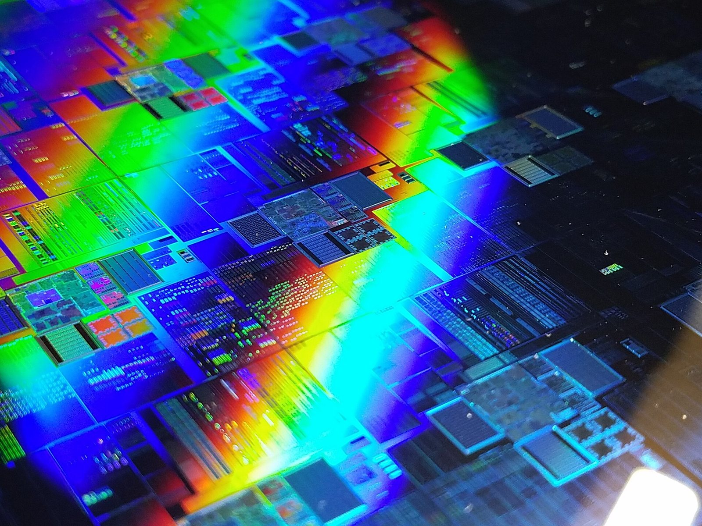

Mercoledì 26 agosto 2026 Wall Street vive una giornata di stand-by (attesa) quasi totale: tutti e tre i principali indici americani chiudono la sessione regolare con variazioni minime, quasi azzerate. L'S&P 500 (Standard & Poor's 500, l'indice delle 500 maggiori società USA) perde −0,12%, il Dow Jones Industrial Average cede −0,08% e il Nasdaq Composite scende −0,16%. L'unico indice a segnare un movimento significativo è il Russell 2000 (indice delle piccole capitalizzazioni USA) con un rialzo di +0,50%. La ragione del blocco è una sola: il mercato aspettava Nvidia (NVDA), che ha comunicato i risultati trimestrali dopo la chiusura. E Nvidia non ha deluso: +5% after hours (fuori orario di borsa), con ricavi record a $96,2 miliardi e una guidance (previsione) per il terzo trimestre a $108 miliardi.
I numeri della seduta: Wall Street in stand-by
La giornata del 26 agosto è una di quelle sedute in cui i mercati non vogliono sbilanciarsi. I volumi di contrattazione sono inferiori alla media, i movimenti intraday (infra-giornalieri) sono contenuti, e i trader (operatori di mercato) preferiscono aspettare prima di assumere posizioni significative. Il catalizzatore — i risultati di Nvidia, l'azienda diventata il termometro dell'intera industria dell'intelligenza artificiale — è atteso per dopo le 22 ora italiana.
| Indice | Chiusura | Variazione giornaliera | Note |
|---|---|---|---|
| S&P 500 | ~7.810 | −0,12% | Piatto in attesa Nvidia |
| Dow Jones | ~53.900 | −0,08% | Minima variazione |
| Nasdaq Composite | ~26.800 | −0,16% | Tech in attesa |
| Russell 2000 | ~2.200 | +0,50% | Small cap sovraperformano |
La divergenza tra Russell 2000 e gli altri indici è il dato più interessante della seduta regolare. Le small cap (piccole capitalizzazioni) — le aziende più piccole che compongono il Russell 2000 — hanno meno esposizione diretta all'AI e a Nvidia, e quindi meno ragione di restare bloccate in attesa dell'evento serale. Questo le ha rese paradossalmente più libere di muoversi, beneficiando di un leggero miglioramento delle aspettative sui tassi di interesse a breve termine.
Il mercato in stand-by: perché l'S&P rimane piatto?
Il fenomeno del mercato paralizzato in attesa di un singolo earnings report (comunicazione dei risultati trimestrali) non è nuovo, ma l'intensità con cui oggi Nvidia domina le aspettative è straordinaria. Non si tratta semplicemente di una grande azienda che riporta i conti: Nvidia è diventata il proxy — l'indicatore indiretto — della salute dell'intera economia dell'intelligenza artificiale, che a sua volta è il tema dominante degli investimenti globali dal 2023.
Le opzioni su Nvidia — i contratti derivati che danno il diritto di comprare o vendere il titolo a un certo prezzo — stavano prezzando un movimento atteso del ±8% dopo la pubblicazione dei risultati. Una volatilità implicita così alta "congela" il mercato: chi possiede azioni Nvidia non vuole vendere prima dei risultati rischiando di perdere il rialzo; chi non le ha non vuole comprarle al prezzo corrente pagando un premium (premio) prima dell'evento.
Il risultato è un mercato che gira a vuoto. L'indice VIX (indice della paura, che misura la volatilità attesa sull'S&P 500) si è mantenuto moderato durante la seduta, riflettendo non una vera calma ma piuttosto l'attesa. Gli analisti lo descrivevano come un mercato "in coiled spring position" — posizione a molla compressa — pronto a scattare in una direzione o nell'altra una volta arrivata la notizia.
Russell 2000 +0,50%: le piccole capitalizzazioni staccano l'indice principale
Il Russell 2000 è l'unico indice americano a chiudere la giornata con un rialzo degno di nota: +0,50%. Questo risultato merita una spiegazione, perché rivela qualcosa di importante sulla struttura del mercato americano in questo periodo.
Le piccole aziende che compongono il Russell 2000 operano principalmente nel mercato interno americano, con meno esposizione all'export e ai cicli tecnologici globali. Sono però molto sensibili ai tassi d'interesse: quando i tassi scendono — o quando il mercato si aspetta che scendano — le small cap tendono a sovraperformare, perché i loro costi di finanziamento si abbassano e le loro valutazioni diventano più attraenti rispetto ai titoli a maggiore capitalizzazione.
Nella giornata del 26 agosto, alcuni dati macroeconomici pubblicati al mattino hanno leggermente rinforzato le aspettative di un pivot (inversione di rotta) da parte della Fed — ovvero di un taglio dei tassi nei prossimi mesi. Questa narrativa, anche se lieve, è stata sufficiente a sostenere le small cap mentre i big del Nasdaq marcavano il passo in attesa di Nvidia.
💡 Impara: Russell 2000 (Indice delle Piccole Capitalizzazioni USA)
Il Russell 2000 è un indice azionario americano che raggruppa le 2.000 aziende più piccole contenute nel Russell 3000, il paniere delle 3.000 maggiori società USA per capitalizzazione di mercato. È il principale riferimento per le small cap (piccole capitalizzazioni) americane. La sua logica è diversa dall'S&P 500: mentre quest'ultimo è dominato da giganti come Apple, Microsoft, Nvidia e Amazon, il Russell 2000 include società regionali, startup in crescita, PMI quotate e aziende di nicchia. Per gli investitori è importante perché misura la "salute" dell'economia reale americana — quando le piccole imprese crescono, l'economia interna è in buona forma. Il Russell 2000 tende a sovraperformare in fasi di ripresa economica e a soffrire di più nelle recessioni, rispetto agli indici a grande capitalizzazione.
Nvidia after hours +5%: $96,2 miliardi di ricavi stravolgono le attese
Dopo la chiusura regolare di Wall Street alle 22:00 ora italiana, Nvidia (ticker: NVDA) ha comunicato i risultati del secondo trimestre dell'anno fiscale 2027 (il trimestre chiuso a luglio 2026). I numeri hanno letteralmente stravolta le aspettative già elevatissime degli analisti.
I ricavi trimestrali hanno raggiunto i $96,2 miliardi, superando il consensus (stima media degli analisti) di circa il 5-6%. L'EPS (Earnings Per Share, utile per azione) si è attestato a $2,22, anch'esso sopra le attese. Ma il dato che ha entusiasmato i mercati è la guidance (previsione ufficiale) per il terzo trimestre fiscale: Nvidia ha proiettato ricavi di $108 miliardi, un livello mai raggiunto da nessuna azienda tecnologica nella storia.
La reazione immediata del titolo nel mercato after hours (fuori orario di borsa) è stata un balzo di circa +5%. In termini assoluti, questo significa che la market cap (capitalizzazione di mercato) di Nvidia è aumentata di circa 170-200 miliardi di dollari in pochi minuti — una cifra superiore all'intera capitalizzazione di molte borse nazionali europee.
Il trascinamento dell'AI è evidente: la divisione Data Center di Nvidia — quella che vende i chip H100, H200 e Blackwell agli hyperscaler come Microsoft, Amazon, Google e Meta — ha generato la grande maggioranza dei ricavi, con una crescita anno su anno superiore al 100%. La domanda di chip per addestrare i modelli di linguaggio di grandi dimensioni (LLM, Large Language Model) rimane insaziabile.
CrowdStrike e Salesforce: altri report della serata
Nvidia non era l'unica grande azienda a comunicare i risultati nella serata del 26 agosto. Anche CrowdStrike (CRWD) e Salesforce (CRM) hanno pubblicato i conti trimestrali, con esiti diversi.
CrowdStrike, leader mondiale nella cybersicurezza basata su intelligenza artificiale, ha riportato ricavi superiori alle attese, con una crescita del segmento ARR (Annual Recurring Revenue, ricavi ricorrenti annuali) — la metrica chiave per le aziende software in abbonamento — in accelerazione. Nonostante il titolo avesse già corso molto negli ultimi mesi, i risultati sono stati accolti positivamente nel mercato after hours.
Salesforce, il gigante del CRM (Customer Relationship Management, software per la gestione delle relazioni con i clienti) in cloud, ha comunicato ricavi in linea con le aspettative, ma ha deluso leggermente sulla guidance per i prossimi trimestri. Gli investitori attendevano un impatto più visibile dei nuovi strumenti AI integrati nel suo CRM. Il titolo ha mostrato una reazione tiepida o leggermente negativa nel post-mercato.
Il contrasto tra i tre report della serata è eloquente: Nvidia — hardware e chip per AI — ancora inarrivabile; CrowdStrike — software AI per la security — in buona salute; Salesforce — software enterprise tradizionale che cerca di integrarsi con l'AI — in attesa di dimostrare il salto qualitativo.
💡 Impara: After Hours Market (Mercato Fuori Orario)
Il mercato americano ha orari di contrattazione regolare che vanno dalle 15:30 alle 22:00 ora italiana (9:30-16:00 ora di New York). Al di fuori di questi orari esistono sessioni pre-market (pre-mercato) e after hours (fuori orario) in cui è comunque possibile scambiare titoli, ma con alcune differenze importanti: i volumi sono molto più bassi, gli spread (differenziale) tra prezzo di acquisto e vendita sono più ampi, e quindi i prezzi possono muoversi in modo più brusco anche su scambi di volume ridotto. Le aziende spesso pubblicano i risultati trimestrali dopo la chiusura ufficiale proprio per dare tempo al mercato di "digerire" i numeri senza movimenti caotici durante la sessione. Un +5% after hours non significa necessariamente che il titolo aprirà +5% il giorno successivo: la seduta regolare coinvolge molti più investitori e può portare correzioni, prese di profitto o ulteriori rialzi.
I risultati di Nvidia: i dati chiave del trimestre
Per comprendere appieno la portata storica dei risultati di Nvidia, è utile mettere in prospettiva i numeri comunicati nel secondo trimestre FY2027 (luglio 2026) rispetto alle aspettative degli analisti e ai trimestri precedenti.
| Metrica finanziaria | Risultato Q2 FY2027 | Stima analisti | Commento |
|---|---|---|---|
| Ricavi trimestrali (Revenue) | $96,2 miliardi | ~$91 miliardi | Superato di ~6% |
| EPS (Utile per azione) | $2,22 | ~$2,10 | Superato di ~6% |
| Guidance Q3 FY2027 | $108 miliardi | ~$99 miliardi | Superiore di ~9% |
| Reazione after hours (NVDA) | +5% | Previsto ±8% | Reazione positiva contenuta |
| Principale driver | Data Center AI | — | Chip H200/Blackwell insaziabili |
Il fatto che il titolo sia salito "solo" del +5% — e non dell'8-10% che qualcuno si aspettava — suggerisce che il mercato aveva già incorporato nei prezzi buona parte delle buone notizie. Questo fenomeno si chiama "buy the rumor, sell the news" (compra la voce, vendi la notizia): il rialzo avviene prima dell'evento, e quando la notizia si conferma positiva la reazione è meno esplosiva del previsto.
Prospettive: cosa cambia per i mercati globali?
I risultati di Nvidia avranno effetti a cascata su più fronti. A Piazza Affari, STMicroelectronics aprirà probabilmente in rialzo nella seduta di giovedì 27 agosto, beneficiando del sentiment (sentimento) positivo sull'intero settore dei semiconduttori. In Asia, titoli come TSMC (il principale produttore di chip su contratto, fornitore di Nvidia), Samsung e i produttori di memorie potrebbero reagire positivamente all'apertura delle borse notturne.
Sul fronte macro, la solidità di Nvidia conferma che la spesa in infrastrutture AI da parte delle grandi aziende tecnologiche — i cosiddetti hyperscaler (fornitori di cloud su scala globale) come Microsoft Azure, Amazon AWS e Google Cloud — non mostra ancora segnali di rallentamento. Questo è positivo per l'intera catena del valore dei semiconduttori e del cloud, ma solleva anche interrogativi sull'ROI (Return on Investment, ritorno sull'investimento) dell'AI: a un certo punto, le aziende dovranno dimostrare che questi investimenti massivi generano ricavi proporzionali.
Per Wall Street, la seduta di giovedì 27 agosto si apre con un catalizzatore positivo. Storicamente, quando Nvidia supera le aspettative in modo netto, il Nasdaq e l'S&P 500 tendono a salire nella seduta successiva, con un effetto moltiplicatore sui titoli tech. Resta però la variabile dei tassi d'interesse: finché la Fed non darà segnali chiari di taglio, la corsa dei mercati incontrerà resistenza sui livelli alti.